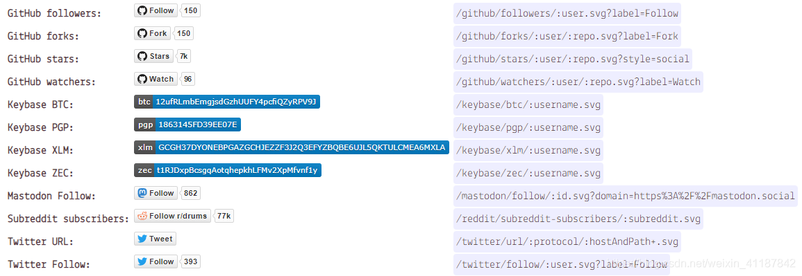
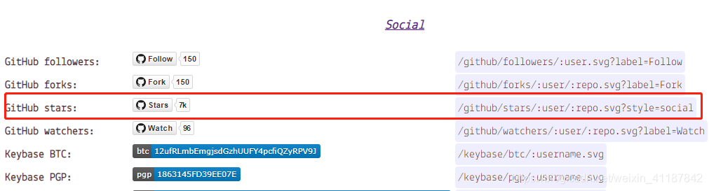
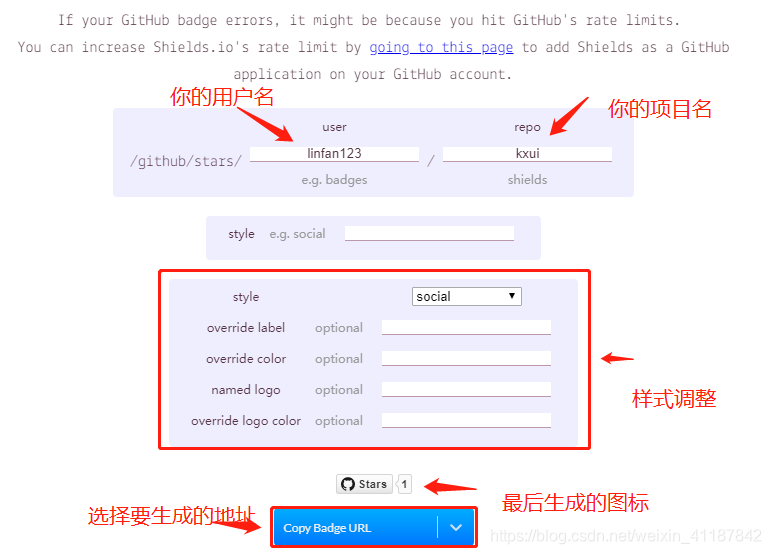
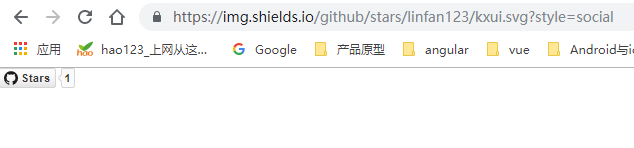

This document is not completed and will be updated anytime.
一、添加阅读次数统计
静态网站建站现在有很多快速的技术和平台，但静态是优点也有缺点，由于是静态的，一些动态的内容如评论、计数等等模块就需要借助外来平台，评论有“多说”，计数有“不蒜”！（多说已经关闭，不蒜子还活着）
“不蒜子”与百度统计谷歌分析等有区别：“不蒜子”可直接将访问次数显示在您在网页上（也可不显示）；对于已经上线一段时间的网站，“不蒜子”允许您初始化首次数据。。
普通用户只需两步走：一行脚本+一行标签，搞定一切。追求极致的用户可以进行任意DIY。
不蒜子官网：http://busuanzi.ibruce.info/
1、安装脚本（必选）
要使用不蒜子必须在页面中引入busuanzi.js，目前最新版如下。
1 | <script async src="//busuanzi.ibruce.info/busuanzi/2.3/busuanzi.pure.mini.js"></script> |
不蒜子可以给任何类型的个人站点使用，如果你是用的hexo，打开themes/你的主题/layout/_partial/footer.ejs添加上述脚本即可，当然你也可以添加到 header 中。
2、安装标签（可选）
只需要复制相应的html标签到你的网站要显示访问量的位置即可。您可以随意更改不蒜子标签为自己喜欢的显示效果，内容参考第三部分扩展开发。根据你要显示内容的不同，这分几种情况。
（1）显示站点总访问量
要显示站点总访问量，复制以下代码添加到你需要显示的位置。有两种算法可选：
算法a：pv的方式，单个用户连续点击n篇文章，记录n次访问量。
1 | 本站总访问量<span id="busuanzi_value_site_pv"></span>次 |
算法b：uv的方式，单个用户连续点击n篇文章，只记录1次访客数。
1 | 本站访客数<span id="busuanzi_value_site_uv"></span>人次 |
如果你是用的hexo，打开themes/你的主题/layout/_partial/footer.ejs添加即可。
实例效果参考：
https://blog.ccswust.org/busuanzi/
（2）显示单页面访问量
要显示每篇文章的访问量，复制以下代码添加到你需要显示的位置。
算法：pv的方式，单个用户点击1篇文章，本篇文章记录1次阅读量。
1 | 本站总访问量<span id="busuanzi_value_page_pv"></span>次 |
代码中文字是可以修改的，只要保留id正确即可。
注意：不蒜子为保持极简，暂不支持在站点文章摘要列表中（如首页）逐个显示每篇文章的阅读次数，如果您非常需要这一功能，可以留言。根据需要程度再考虑开发相应的功能。
实例效果参考：
https://blog.ccswust.org/busuanzi/pv.html
注意：不蒜子为保持极简，暂不支持在站点文章摘要列表中（如首页）逐个显示每篇文章的阅读次数，如果您非常需要这一功能，可以留言。根据需要程度再考虑开发相应的功能。
3、只计数不显示
只安装脚本代码，不安装标签代码。
至此，不蒜子已经可以正常运行，如果你还要自定义一些内容或有疑问，请继续阅读。
附录：扩展开发（自定义）
不蒜子之所以称为极客的算子，正是因为不蒜子自身只提供标签+数字，至于显示的style和css动画效果，任你发挥。
- busuanzi_value_site_pv 的作用是异步回填访问数，这个id一定要正确。
- busuanzi_container_site_pv的作用是为防止计数服务访问出错或超时（3秒）的情况下，使整个标签自动隐藏显示，带来更好的体验。这个id可以省略。
因此，你也可以使用极简模式：
1 | 本站总访问量<span id="busuanzi_value_site_pv"></span>次本站访客数<span id="busuanzi_value_site_uv"></span>人次本文总阅读量<span id="busuanzi_value_page_pv"></span>次 |
或者个性化一下：
1 | Total <span id="busuanzi_value_site_pv"></span> views.您是xxx的第<span id="busuanzi_value_site_uv"></span>个小伙伴<span id="busuanzi_value_page_pv"></span> Hits |
1、我只要统计不显示？
只引入busuanzi.js，不引入显示标签即可。
2、你的标签太丑了，我想美化一下可以么？
可以的，您可以用自己站点的css进行控制，只要内层span的id正确以便回填访问次数即可，甚至标签都可以不是span。
3、中文字体太丑了，我的主题不适合？
您可以将本站总访问量xxx次改成view xxx times等英文以获得更和谐的显示效果。
4、在访问量数据未取回来之前，我不想让页面显示为诸如“本站总访问量 次”，显得太low，怎么办？
只需要如下css，不蒜子执行完毕会自动将标签显示出来，其他以此类推：
1 | <span id="busuanzi_container_site_pv" style='display:none'> 本站总访问量<span id="busuanzi_value_site_pv"></span>次</span> |
上面的做法还是很low？！看下这个https://blog.ccswust.org/busuanzi/diy.html
右键看下源码，没加载出来前就显示个菊花转转转:
首先，你要引入font-awesome字体：
1 | <link rel="stylesheet" href="//maxcdn.bootstrapcdn.com/font-awesome/4.3.0/css/font-awesome.min.css"> |
其次，修改不蒜子标签：
1 | <span id="busuanzi_value_page_pv"><i class="fa fa-spinner"></i></span> Hits或（旋转效果）<span id="busuanzi_value_page_pv"><i class="fa fa-spinner fa-spin"></i></span> Hits |
和谐多了！
5、我的网站已经运行一段时间了，想初始化访问次数怎么办？请先注册登录，自行修改阅读次数。有任何其他问题或疑问可以留言。
二、获取展示github项目star的数量
如果你想在某个项目中想展示下github仓库的star或者Fork啥的，可以通过下面的通用接口获取，几乎可以获取GitHub上大部分信息了。

比如，我要调用我的start数量，那么就是这个：

点击它，会进入一个表单页面

通过url你最后可以得到一个图片：
